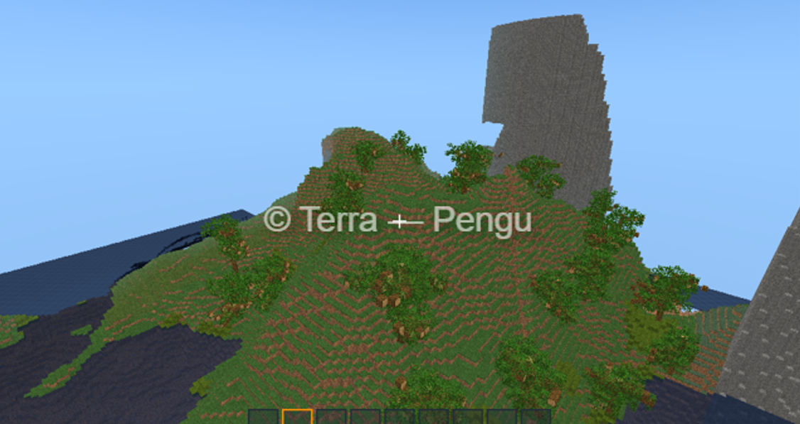

v0.0.8
Movement & World Systems
- Reworked Player Movement System v2.0 — smoother movement, jumping, and shift mechanics.
- Upgraded Procedural Tree Generator from v1.0 to v4.0 with significantly improved variation and generation logic.
- Improved Water System & Water Mesh (v2.0 → v3.5) — better performance and reduced rendering lag.
